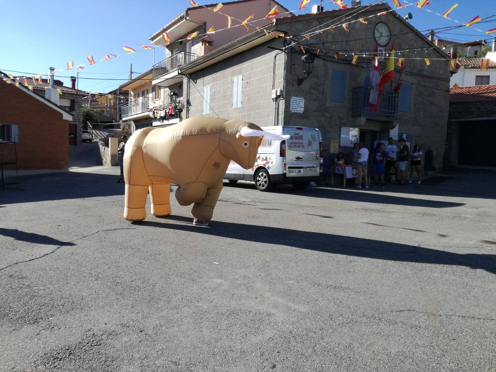
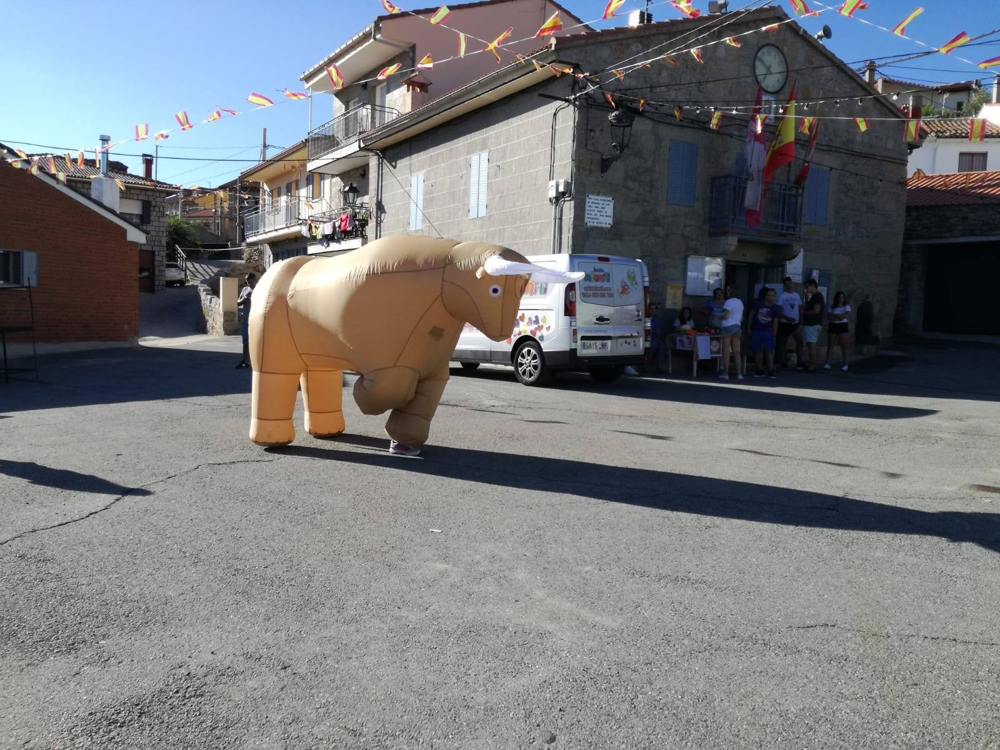
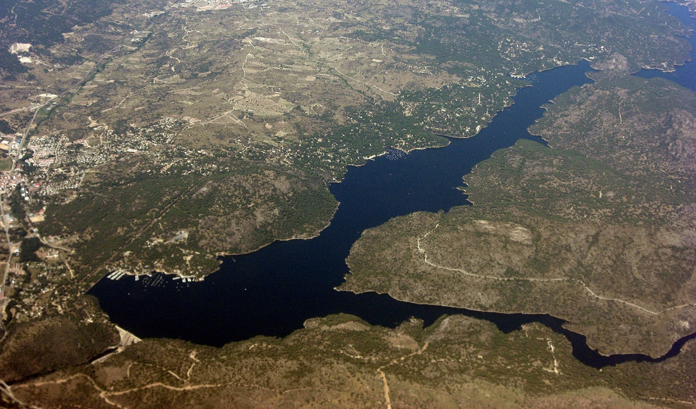
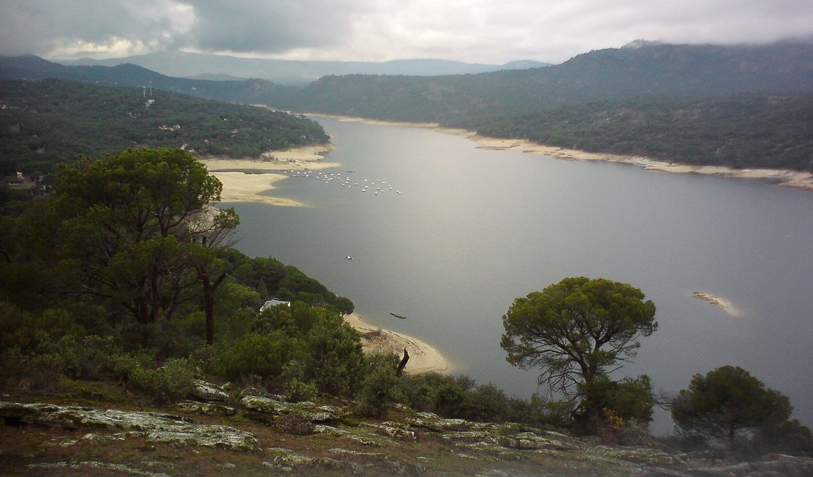
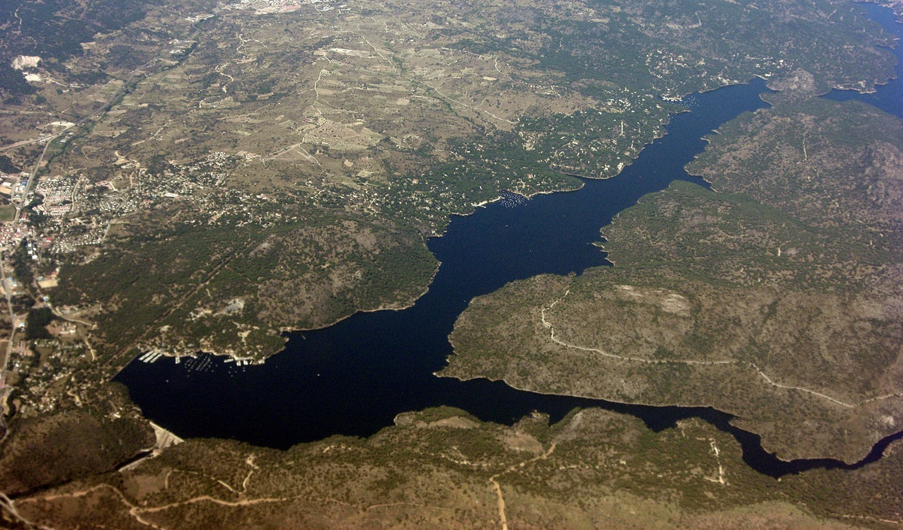
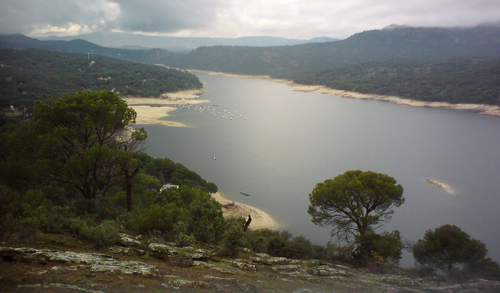

Football:
Venez jouer au foot à la nava ou au terrain en haut du village, cependant vous ne serez accepter que si vous êtes champioooooons du monde. ⭐️⭐️

Si vous aimez seulement supporter votre équipe sur le banc de touche, vous avez toujours la possibilité de regarder de nombreux matchs retransmis en direct sur la place


 

 


